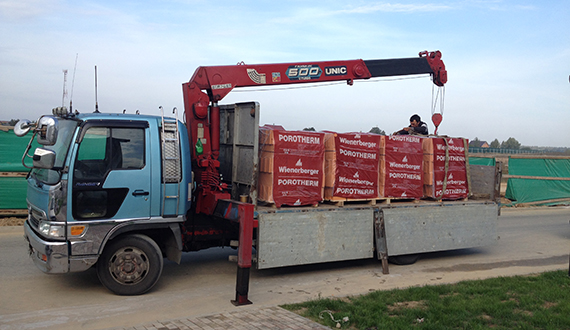
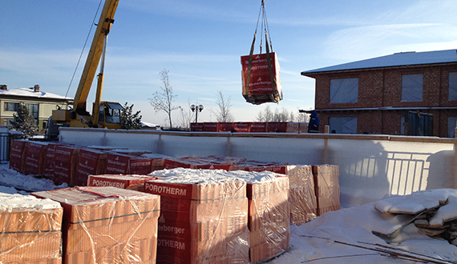
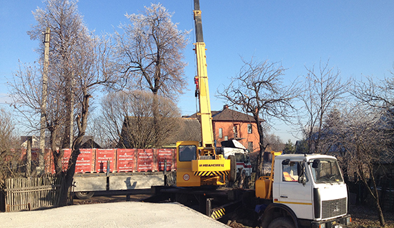
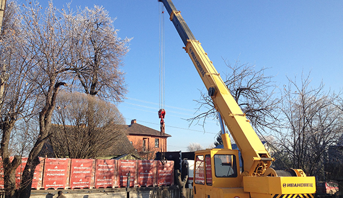
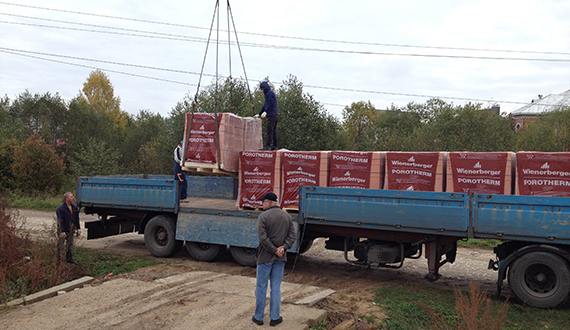
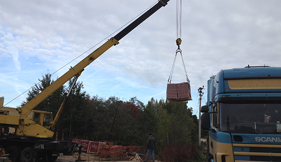

Способность сохранять оптимальный климат, экологическая безопасность, возможность
воплощать любые дизайнерские решения и несравненно долгий срок службы —
уникальные преимущества Porotherm
POROTHERM — Теплая керамика
которая эффективно сохраняет тепло зимой и прохладу летом, обеспечивает оптимальную влажность воздуха и не пропускает посторонние звуки Porotherm обладает такими теплосберегающими свойствами, благодаря которым повышается эффективность работы систем отопления и кондиционирования,
и в итоге сокращаются затраты на содержание дома.
POROTHERM — Шум Вас не потревожит
У стен из керамических блоков звукоизоляция более 53 Дб, то есть они «не пропускают» в дом шумы ниже этого уровня. Даже если прямо под домом будут стоять и разговаривать люди (звук обычного разговора 40 Дб), внутри этого не будет слышно. А если коттедж стоит недалеко от дороги, Вы будете надёжно защищены от шума проезжающих мимо машин.
POROTHERM — Прочные стены
Блоки Porotherm имеют марку прочности М-100, а это значит, что их можно использовать при строительстве зданий до 10 этажей и при этом покрывать кровлю натуральной керамической черепицей. В этом случае не требуется никаких дополнительных армирующих элементов и конструкций.
POROTHERM — Керамические блоки
изготовленные из натуральной природной глины, без химических примесей и отличающиеся абсолютной экологической безопасностью.
POROTHERM — Поризованные блоки
способные верно служить на протяжении столетий без возникновения трещин и полностью исключающие усадку здания
Один крупноформатный керамический блок заменяет от 10 до 14 рядовых кирпичей в кладке, что существенно ускоряет процесс монтажа стен.
Ещё быстрее строительство делает вертикальная система соединения паз-гребень, которой оснащены блоки Porotherm.
Строительство идет быстрее в 2–3 разаЭкономия кладочного раствора до 30%В среднем марка прочности блока — M-100Надежная защита от появления плесени и грибкаЗвукоизоляция более 53 ДецибелСпособность стен
выдерживать любые
нагрузкиМорозостойкость
выше, чем у аналоговСертификат ГОСТ
Wienerberger разрушает мифы о керамических блоках
выпуск 1
Главное о керамических блоках Porotherm
Что такое теплая керамика? Что экономичнее: блоки
или кирпичи? Каковы расходы на материалы? Можно
ли распилить блок? Смотрите видео и узнайте, как.
выпуск 2
Теплая керамика: всегда комфортный климат в помещении
Эксперимент с тепловизором. Сохраняют ли керамические
блоки тепло в вашем доме? В каком же эксперименте
пригодилась электрометла?
выпуск 3
Сверление отверстий в крепких стенах: возможно ли это?
Как сверлить отверстие в керамических блоках и крепить
предметы на стену. Сможет ли хрупкая девушка
просверлить отверстие в блоках? Можно ли на блоки
Porotherm прикрепить тяжелые предметы? Вы узнаете,
как сделать это при помощи химических анкеров.
Концерн Wienerberger — мировой лидер по производству
керамического кирпича и черепицы.
Концерн Wienerberger был основан Алоисом Мисбахом в 1819 году
в районе Винерберг города Вены. Выход на международную арену
пришелся на 1986 год. За короткий срок компания превратилась
в мирового лидера. На сегодняшний день она представляет собой
современное предприятие с международным составом акционеров.
Концерн представлен более чем 230 кирпичными заводами в 30 странах
и является крупнейшим производителем теплой керамики.
Porotherm от Wienerberger — керамические блоки №1 в мире!
Керамические блоки для возведения несущих наружных стен толщиной
от 380 до 510 миллиметров, которые не требуют
дополнительного утепления
Porotherm 38 10,7NF
Невероятный комфорт при удивительно тонких стенах
Несмотря на незначительную толщину и вес,
керамический блок Porotherm 38
обеспечивает равномерный и естественный
климат в помещениях 24 часа в сутки и круглый
год — в жару и морозы.
Благодаря крупному формату блоков
и уникальному дизайну пустот, обладает
отличными теплотехническими показателями,
позволяет снизить толщину кладки
и сократить стоимость строительства.
Лидер по теплопроводности среди
аналогичных материалов — самый
экономичный вариант при лучших
эксплуатационных свойствах. Надежные
и крепкие стены обеспечат стопроцентную
защиту от холода, жары, шума и сырости.
Встречайте бестселлер среди Porotherm
c повышенными эксплуатационными
характеристиками — еще более легкие
и влагостойкие блоки. Дома из блоков линейки
Green Line, — идеальное пространство для
спокойной, здорвоой и счастливой жизни.
Керамические блоки для возведения и кладки внутренних и наружных несущих стен, а также межкомнатных перегородок
Porotherm 2, 1NF
Широкие возможности для планировки и дизайна
Представляя собой идеальную
основу для штукатурки, камень
позволяет сократить время
возведения стен и уменьшить
расход раствора в несколько раз.
Удобные размеры и возможность
сочетать практически с любыми
строительными материалами,
дают полную свободу
архитектурному творчеству
и возможность создавать изящные
планировки в любом стиле.
Практичное интерьерное решение со стильным дизайном
Сохранив важнейшие практические
характеристики, простоту
и высокую скорость кладки, камень
получил новое свойство —
декоративную поверхность желтого
цвета с персиковыми полутонами.
Стильный керамический блок,
который совершенно не требует
финишной отделки, придется по
вкусу любителям современного
минималистичного дизайна.
Универсальное решение для экономии времени и средств
Стены обеспечивают в доме
стабильную влажность
и комфортную температуру. Их
габариты позволяют быстро
строить: для кладки 1 м2 стены
достаточно всего 11 блоков и 20
минут. Особое пазогребенное
соединение и большой размер
блоков сокращают расход
кладочного раствора втрое!
Керамические блоки для кладки внутренних
ненесущих межкомнатных стен, толщиной 80 и 120 мм
Porotherm 8 4,5NF
Универсальное решение для экономии времени и средств
Беспроигрышный выбор для тех, кто желает
сэкономить площадь помещения. Особая
технология кладки блоков сокращает
трудозатраты и расход раствора. Тончайшие
перегородки из Porotherm 8 сохранили
способность к накоплению тепла и его отдаче
при снижении температуры.
Незначительная толщина позволяет сохранить
полезную площадь помещения, сократив
трудозатраты и расход раствора. Вместе с тем,
изделия накапливают тепло, полученное от
отопления, и равномерно возвращают его при
снижении температуры в помещении.
Керамические блоки для перевязки вертикальных швов
и создания дверных и оконных откосов
Porotherm 38 1/2 10,7NF
доборный элемент
Незаменимый компаньон для блоков Porotherm 3
Керамический блок идеально подходит для
перевязки вертикальных швов и монтажа
дверных и оконных откосов при применении
популярных тонких камней Porotherm 38.
Данный вид, как правило, применяется для
перевязки вертикальных швов и создания
дверных и оконных откосов при
использовании керамических блоков
оптимального среднего размера Porotherm 44.
Размер был специально создан для перевязки
вертикальных швов и создания дверных
и оконных откосов в сочетании с топовым
усиленным керамическим блоком Porotherm 51.
Теплый раствор Porotherm TM с содержанием
гранул перлита – лучшее решение для кладки
теплой керамики. Смесь позволяет сократить
теплопотери через швы до 15% –
ее теплопроводность сравнима
с теплопроводностью поризованный
керамики. Фактически, с применением блоков
и кладовой смеси Porotherm вы строите
монолитную стену, которая не пропускает ни
морозы, ни зной
Универсальная штукатурка для машинного
или ручного выполнения традиционных одно-
и многослойных штукатурных покрытий
внутри и снаружи зданий, не требующая
армирования, обладает высокими
теплоизоляционными свойствами и хорошей
паропроницаемостью. Состав улучшает
эксплуатационные свойства добавок. Смесь
можно наносить и в качестве подкладочного
слоя под декоративную штукатурку.
Сетка на основе базальтового волокна служит
для армирования лицевого кирпича,
в качестве гибких соединительных связей
в двухслойной кладке и для армирования
кладки. Материал подходит для всех лицевых
кирпичей и позволяет вести раздельную
кладку лицевого кирпича и крупноформатных
камней. Сетка сокращает расход раствора
на 10%, повышая прочность
и теплотехнические свойства стены.
Специальный слайдер применяется для
быстрой и ровной кладки керамических
блоков и стандартного кирпича. Особая
конструкция слайдера позволяет сэкономить
кладочный раствор и исключить «человеческий
фактор», получив абсолютно ровные швы.
Также удобный и эргономичный слайдер
значительно увеличивает скорость монтажа
стен из керамических блоков или кирпича.
За пять лет компания закрепила статус безусловного лидера по продаже
керамических блоков в России.
Высокое качество продукции, гибкая ценовая политика и безупречный
клиентский сервис являются основой нашей работы. Честные,
долгосрочные и взаимовыгодные отношения с клиентами —
приоритет нашей работы.
Уже
diff($datetime2);
$days = $interval->format('%a');
echo $days + 2567;
?>
клиентов
заказали Porotherm в нашей компании
Компания Витория — один из крупнейших оптово-розничных поставщиков керамических блоков Porotherm и сопутствующей продукции завода Wienerberger в России.
Опыт работы с 2010 года
За 6 лет мы стали лидерами рынка
Продукция в наличии на складе
Вы всегда уверены, что получите свой заказ
Персональный менеджер для каждого клиента
Вы с самого начала получаете особые условия
Удобные условия оплаты и доставки
Вы можете получить товар за 1 день и оплатить при получении
Бесплатная парковка
Всегда есть место где
припарковаться, если вы
решите посетить наш офис
Wi-fi
Быстрый и бесплатный интернет для наших клиентов
Максимально простая схема работы в 3 шага
Шаг 1
Оставьте заявку на товар онлайн,
по телефону или, приехав
к нам в офис
Шаг 2
Подтвердите заказ при
разговоре с персональным
менеджером
Шаг 3
Получите заказ
в обозначенное время
Доставка: всегда вовремя, от 1 дня






Доставка по Москве и области
Доставка товара по Москве и Московской
области производится в течение всего
1–3 дней, либо точно в указанное Вами
время (по предварительной
договоренности).
Доставка в регионы
Доставка в регионы производится после
безналичной предоплаты. Наша компания
берет на себя организацию доставки.
Как оплатить?
Наличными
При доставке и самовывозе
Наличными
В нашем офисе
Безналичная оплата
Банковский перевод по счету
Отзывы наших покупателей
Андрей Васильченко г. Балашиха
Отличная компания, можно смело доверять.
Вежливые менеджеры, всегда готовы идти навстречу.
Сотрудичаем на протяжении трех лет, без нареканий.
Всегда есть нужные товары на складе, всегда все
в срок. И более того. В начале ноября 2015 нужно
было доставить блоки в течение 10 часов, ребята
вошли в положение и отреагировали опеативно.
Товар был на объекте через 8 часов, без проблем
приняли нал. Спасли проект, спасибо! Будем
обрашаться еще.
Евгений Туров
г. Москва
Если заказывать поротерм, то только у Витории.
Превосходное обслуживание!!! Очень нравится
уровень менеджеров. И сроки поставок на высоте!!
Привезли всё на следущие сутки. Качество товара на
высоте, крошка не сыплется, блок в отличном
состоянии, и никакого обмана (прежде сталкивался
с тем что не довозили блоки в заказанном объеме).
Спасибо ребятам за бесплатную доставку —
хороший бонус в наше время!!!
Благодарности от наших партнеров
Будем рады видеть Вас в нашем офисе!
г. Москва 88 км МКАД (внешняя сторона)
Бизнес-центр «Нагорное»
Режим работы: Пн.–Вс.: с 8:00 до 22:00
Подписывайтесь в соцсетях, и узнавайте о спецпредложениях первым!
Спасибо мы свяжемся с вами в ближайшее время.
Дом из блоков Porotherm
Проект 180-002-П из крупноформатных блоков Porotherm
от архитектурного бюро «House Expert»
Перед вами аккуратный и компактный домик в классическом
стиле. Фасад украшен балконом с ажурными перилами,
стройными колоннами и очаровательными карнизами на окнах.
Для удобства предусмотрены террасы.
На первом этаже
большая гостиная зона и вместительная кухня, есть санузел
и комната для гостей. Но это может быть также кабинет игровая
или библиотека.
На втором этаже архитектор предлагает расположить три
спальни со встроенными шкафами и выходами на балконы.
Имеется большая ванная комната.
Для машины предусмотрен гараж.
Дом из блоков Porotherm
Проект 180-002-П из крупноформатных блоков Porotherm
от архитектурного бюро «House Expert»
 Узнайте больше
Узнайте больше


 Porotherm 2, 1NF Astra
Porotherm 2, 1NF Astra
 Porotherm 12 6,7NF
Porotherm 12 6,7NF


 Смотрите другие полезные видео на канале Youtube
Смотрите другие полезные видео на канале Youtube


{kind=link}